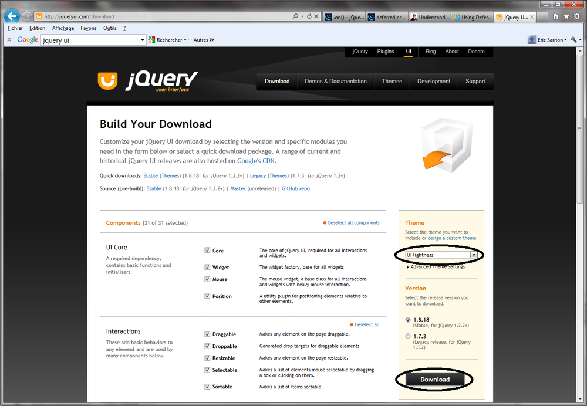

{% include JB/setup %}
{% raw %}
<div>
<div class="book" title="What Is a CSS Theme?"><div class="book"><div class="book"><div class="book"><h1 class="title2"><a id="what_is_a_css_theme_question" class="calibre1"></a>What Is a CSS Theme?</h1></div></div></div><p class="calibre7">What are the CSS themes we talked about earlier? To find out, just
    download a new customized version of jQuery UI, depending on the chosen
    theme. For that, go to <a class="ulink" href="http://jqueryui.com/download">http://jqueryui.com/download</a>,
    which displays the page shown in <a class="ulink" href="ch01s03.html#download_of_the_jquery_ui_with_theme_cus" title="Figure 1-3. Download of the jQuery UI with theme customization">Figure 1-3</a>.</p><p class="calibre7">Choose the UI lightness theme from the list on the right, then
    retrieve the ZIP file for jQuery UI associated with this theme by clicking
    the Download button. This ZIP file contains the same directory, but the
    CSS files included in <em class="calibre4">css</em> directory
    are adapted to the new theme. To see the look of this theme, view the new
    <em class="calibre4">index.html</em> file included in the
    <em class="calibre4">queryui</em> directory (this file will
    have overwritten the previous one). An example of a theme is shown in
    <a class="ulink" href="ch01s04.html#the_ui-lightness_theme" title="Figure 1-4. The ui-lightness theme">Figure 1-4</a>.</p><p class="calibre7">Each theme provides a unique combination of background colors,
    fonts, and other screen elements. If we look at the <em class="calibre4">css</em> directory, we see two subdirectories
    containing each of the themes that we have downloaded:</p><div class="book"><ul class="itemizedlist"><li class="listitem"><p class="calibre7">smoothness is the default theme downloaded with jQuery UI</p></li><li class="listitem"><p class="calibre7">ui-lightness is the theme we just downloaded from the <a class="ulink" href="http://jqueryui.com/download">http://jqueryui.com/download</a> page.</p></li></ul></div><div class="book"><div class="figure"><a id="download_of_the_jquery_ui_with_theme_cus" class="firstname"></a><div class="book"><div class="book"><a id="I_mediaobject1_d1e476" class="firstname"></a></div></div><p class="title4">Figure 1-3. Download of the jQuery UI with theme customization</p></div></div></div></div>

{% endraw %}

